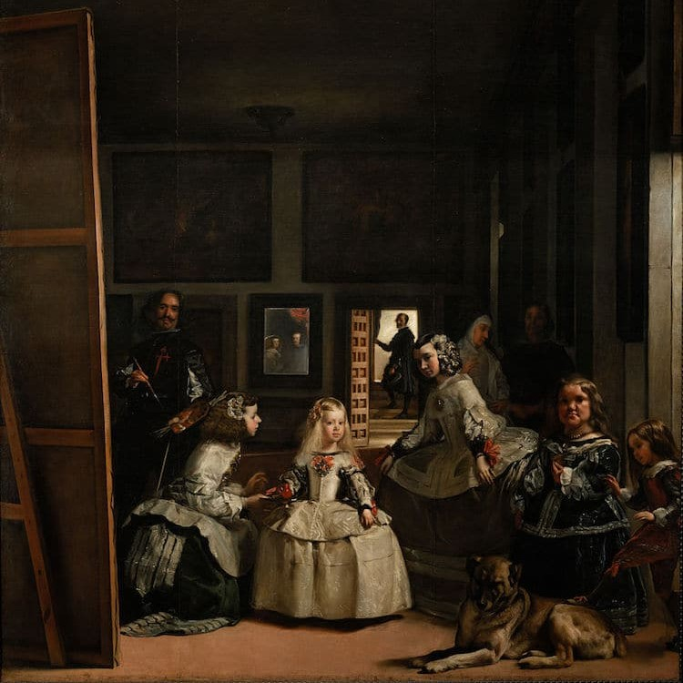

"Las Meninas" (1657)
"The Surrender of Breda" (1634–1635)
"The Triumph of Bacchus" (1629)

"Venus at her Mirror" (1647–1651)
"I'll never get tired of hearing your sweet words, but I will get tired of not."
Diego Velázquez (1599 – 1660) was a Spanish painter, who was the leading artist in the court of King Philip IV, and one of the most important painters of the Spanish Golden Age.
Velázquez’s artwork from the first quarter of the nineteenth century was a model for the realist and impressionist painters, in particular, Édouard Manet.
"Las Meninas" (1657)
"The Surrender of Breda" (1634–1635)
"The Triumph of Bacchus" (1629)
"Venus at her Mirror" (1647–1651)